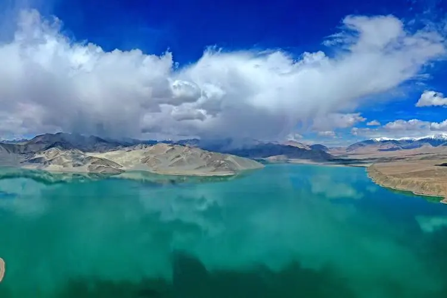

Introduction to water resources
Water resources refer to natural water in various forms (gaseous, liquid or solid) in nature, including water in rivers and lakes, mountain snow, glaciers and groundwater. These water resources have a certain quantity and usable quality and can satisfy a certain purpose in a certain place for a long time. Freshwater resources are part of water resources, mainly freshwater resources on land, including water in rivers and lakes, mountain snow, glaciers, and groundwater. The distribution of these freshwater resources is extremely uneven around the world. About 70% of the freshwater resources are frozen in the ice caps of Antarctica and the Arctic. However, the freshwater resources that humans can directly utilize only account for 0.26% of the total water on the earth.Through the water cycle, global water resources can continuously renew and replenish fresh water on land to meet human production and living needs. In China, the total amount of water resources is abundant, but due to its large population, the per capita water resources are small.
Industrial water:
Water resources used in various industrial production and manufacturing processes.
Agricultural water:
water used for agricultural production, irrigation of farmland, animal husbandry, etc.
Domestic water:
In addition to drinking water, it also includes daily water for washing, cleaning, toilet flushing, etc.

Energy production water:
water resources used in energy production processes such as power generation, nuclear energy, and oil extraction.